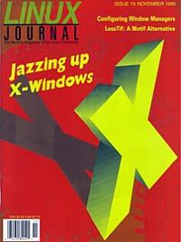

Shutdown Archive web server
Search:
Linux Journal
Issue #19/November 1995

Features
Optimizing the Linux User Interface
by Jeff Arnholt
Create a more efficient desktop with frwm and tcsh.
LessTif and the Hungry ViewKit
by Malcolm Murphy
The efforts of the Hungry Programmers are making the Motif widget set available to Linux users.
Getting the Most out of X Resources
by Preston Brown
Always wanted to change the look of X Windows? Here are the tools to do it easily.
News & Articles
How to Build a Mac
by Andreas Schiffler and David Moody
The Best Without X
by Alessandro Rubini
Linux on Low-End Hardware
by Trenton B. Tuggle
Linux Serving IKEA
by Anders Ostling
Linux at the SCO Forum
by Belinda Frazier
Reviews
Product Review
IGEL Etherminal 3x
by Michael K Johnson
Book Review
Teach Yourself Perl
by David Flood
Columns
Stop the Presses
Elf is on the Way
by Michael K. Johnson
New Products
Linux System Administration
Using LILO
by Æleen Frisch
Archive Index
Shutdown Archive web server
Search:
Copyright © 1994 - 2018
Linux Journal
. All rights reserved.